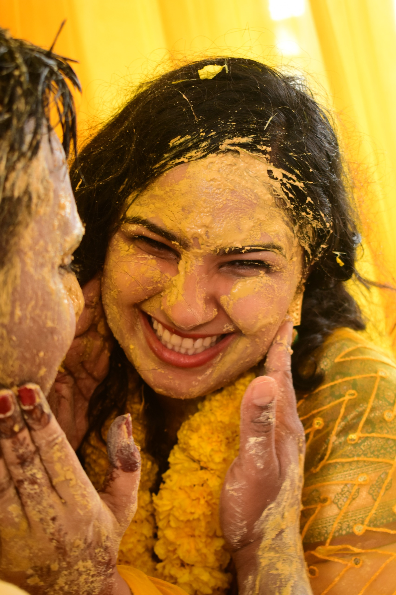
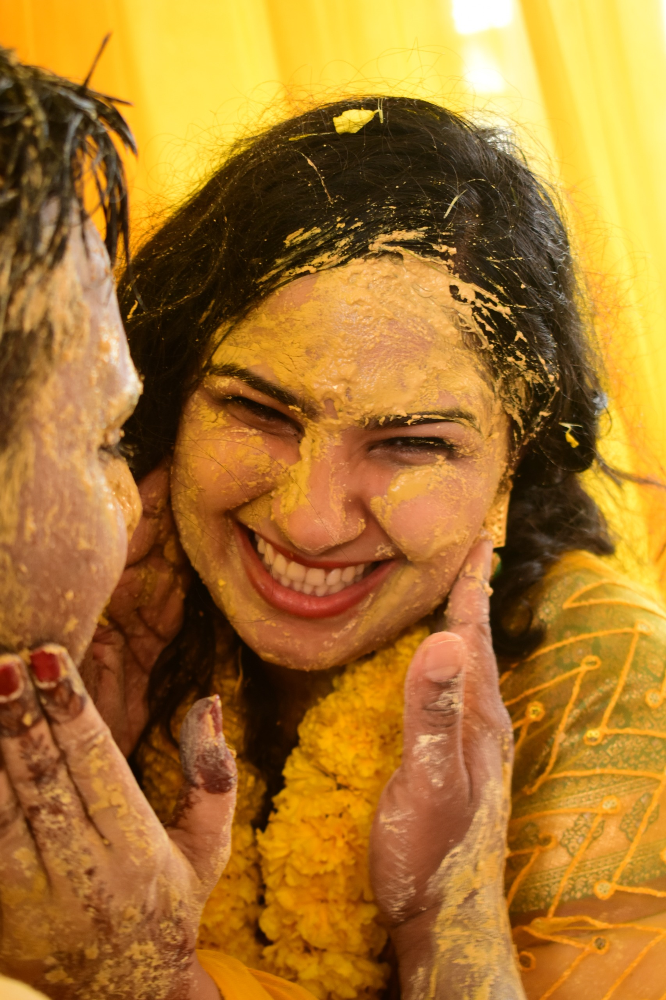
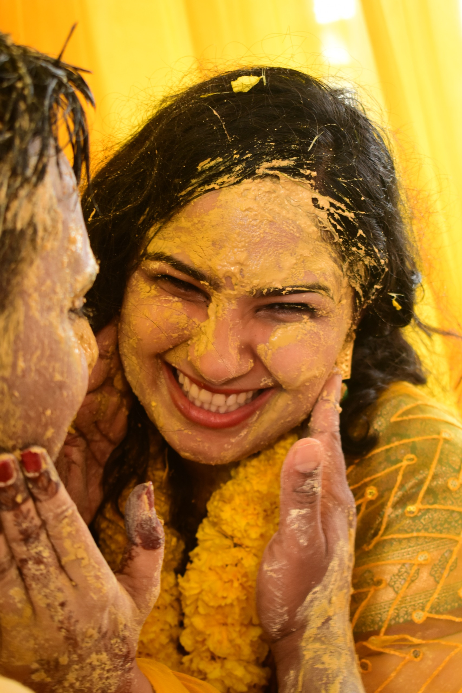

Cherished Memories
 

Capturing the Color of Emotion
At Heart & Hues, we believe in capturing more than just moments; we freeze emotions, stories, and memories that last a lifetime.

Our approach to photography is centered around capturing life's most meaningful moments — the emotions, the connections, and the stories that unfold naturally. We believe true beauty lies in the unscripted, the unposed, and the genuine. With a cozy, candid, and fine-art style, we focus on creating timeless images that reflect the heart and soul of each moment, rather than forcing artificial poses. Our goal is to craft photographs that evoke happiness, warmth, and nostalgia — allowing you to cherish and revisit these precious memories for a lifetime.
Forever in Love
Heartfelt Portraits

Newborn Magic

Other Joyful Events
"I am incredibly grateful for the opportunity to work with Heart & Hues. The portrait session was a delightful experience — the photographer made me feel so comfortable and natural, capturing the true essence of who I am in the most beautiful way. The attention to detail, warmth, and care in every shot truly made this experience unforgettable. I now have portraits that I will cherish for years to come. Thank you for creating such a special memory!"
— Maneesha